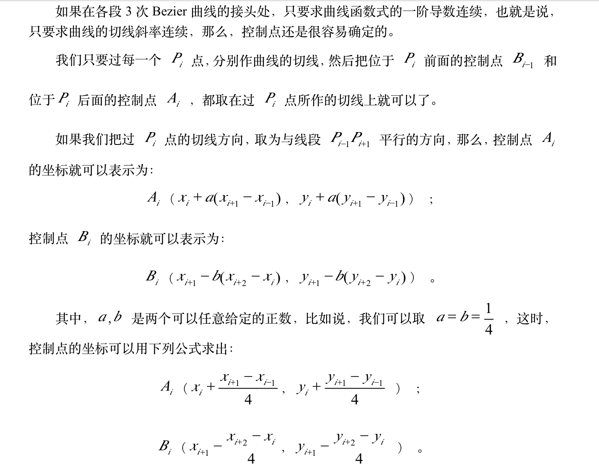
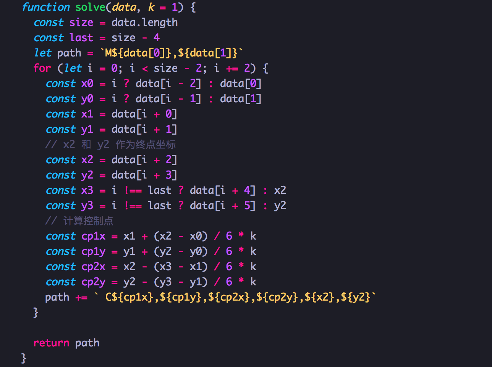

js实现将一系列点拟合成平滑曲线
用鼠标画svg曲线，来自一次动画项目的探索
引出问题
业务上遇到了这样的问题，在浏览器中，使元素沿着用户画出的路径移动。 因为让元素沿着svg路径移动已经实现了，所以要做的是用鼠标画出路径。
鼠标方法只能获取鼠标在页面中的实时坐标，是离散的坐标点，如何将这些坐标点转化成平滑的路径是问题的关键。
思考过程
svg的三次贝塞尔曲线需要定义一个点和两个控制点，所以用C命令创建三次贝塞尔曲线，需要设置三组坐标参数(c dx1 dy1, dx2 dy2, dx dy)。 这里的最后一个坐标(dx, dy)表示的是曲线的终点，另外两个坐标是控制点，(dx1, dy1)是起点的控制点，(dx2, dy2)是终点的控制点。 终点的坐标点好说，也就是获取的鼠标位置点，难的是如何得到两个控制点。
网上搜索解决办法，在百度文库上发现了一篇文章。  现在来尝试下用这个方法转化坐标。
设计思路
假设获取的一系列鼠标坐标保存在数组mouse[]中。
mouse = [x1, y1, x2, y2, x3, y3, x4, y4, x5, y5, x6, y6, x7, y7, ...];
以(x3, y3)点为例。
后控制点计算：
dx1 = x3 + a(x4 - x2);
dy1 = y3 + a(y4 - y2);
前控制点计算：
dx2 = x4 - a(x5 - x3);
dy2 = y4 - a(y5 - y3);
（a为系数，可以尝试不同系数，观察结果）
那么依次求出每对点的控制点，就能连成一条平滑的曲线了。
开始的一对点作为起点不用求，第二对和最后一对点作为计算点，不做为记录点。
撸代码
调用函数时候传入参数，控制计算系数，系数为1/6*k。将函数返回的结果赋给path标签的d属性，就可以画出svg轨迹。具体demo看这里